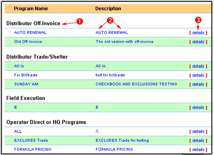

Altavista
Here
| 1 |
2 |
3 |
4 |
5 |
6 |
7 |
8 |
9 |
10 |
11 |
12 |
13 |
14 |
|
| Create a New Program -- Select a Program |
|---|
| |
 |
| | The first step in creating a new program is selecting which template you wish to model your program around. The templates will outline which options and screens you will have access to for the program, and other basic information about the program. Administrators can create new templates by going to the Program Wizard in the Settings Control Panel.
Once you have selected a template for your program, click on either the Program Name or Description. A pop-up window will then appear saying "Okay to create a program name you chose program? Click on the "Okay" button to continue.
|
Altavista
Here
| 1 |
2 |
3 |
4 |
5 |
6 |
7 |
8 |
9 |
10 |
11 |
12 |
13 |
14 |
|
This document was last updated on December 02, 2002
Queries
Get_Session_Window (Records=1, Time=31ms)
SQL =
Select Session_Expiration_Length
From General_Settings
Get_Session_Status (Records=1, Time=31ms)
SQL =
Select Session_ID, Session_Date_Time_Stamp
From Session_Tracker
Where Session_User_ID = 'D63045A9-97C8-4810-B0B8FD2F1D834850'
Update_Session_Status (Records=0, Time=266ms)
SQL =
UPDATE Session_Tracker
SET Session_Date_Time_Stamp = {ts '2003-01-06 15:48:49'}
WHERE Session_User_ID = 'D63045A9-97C8-4810-B0B8FD2F1D834850'
Execution Time328 milliseconds
| 0 ms | C:\CFUSION\CUSTOMTAGS\TEMPLATENAME.CFM |
| 328 ms | C:\INETPUB\WWWROOT\AWAYX\APPLICATION.CFM |
| 0 ms | C:\INETPUB\WWWROOT\AWAYX\APPLICATION_DATASOURCE.CFM |
| 0 ms | C:\INETPUB\WWWROOT\AWAYX\GET_APP_PATH.CFM |
| 0 ms | C:\INETPUB\WWWROOT\AWAYX\HELP_FILES\MANUAL\CREATEPROGRAM\CREATEPROGRAM_TOC.CFM |
| 0 ms | C:\INETPUB\WWWROOT\AWAYX\HELP_FILES\MANUAL\CREATEPROGRAM\CREATEPROGRAM_UPDATED.CFM |
| 0 ms | C:\INETPUB\WWWROOT\AWAYX\HELP_FILES\MANUAL\CREATEPROGRAM\INDEX.CFM |
| 0 ms | C:\INETPUB\WWWROOT\AWAYX\HELP_FILES\UPDATED.CFM |
| 0 ms | C:\INETPUB\WWWROOT\AWAYX\ONREQUESTEND.CFM |
| 0 ms | STARTUP, PARSING, & SHUTDOWN |
ParametersCGI Variables:
AUTH_PASSWORD=
AUTH_TYPE=
AUTH_USER=
CERT_COOKIE=
CERT_FLAGS=
CERT_ISSUER=
CERT_KEYSIZE=
CERT_SECRETKEYSIZE=
CERT_SERIALNUMBER=
CERT_SERVER_ISSUER=
CERT_SERVER_SUBJECT=
CERT_SUBJECT=
CF_TEMPLATE_PATH=c:\inetpub\wwwroot\awayx\help_files\manual\createprogram\index.cfm
CONTENT_LENGTH=0
CONTENT_TYPE=
GATEWAY_INTERFACE=CGI/1.1
HTTP_ACCEPT=*/*
HTTP_ACCEPT_ENCODING=gzip, deflate
HTTP_ACCEPT_LANGUAGE=en-us
HTTP_CONNECTION=Keep-Alive
HTTP_COOKIE=CFID=10; CFTOKEN=60884462; USER_INFO=%3CwddxPacket+version%3D%271%2E0%27%3E%3Cheader%3E%3C%2Fheader%3E%3Cdata%3E%3Cstruct%3E%3Cvar+name%3D%27ACCESS%5FLEVEL%27%3E%3Cstring%3E%3C%2Fstring%3E%3C%2Fvar%3E%3Cvar+name%3D%27COMPANY%5FLOGO%27%3E%3Cstring%3Elogo%5FBSA%2Egif%3C%2Fstring%3E%3C%2Fvar%3E%3Cvar+name%3D%27COMPANY%5FMAIN%5FID%27%3E%3Cstring%3E43A2A03F%2DE0D9%2D4EBF%2DB82F0DBE30A2F2CD%3C%2Fstring%3E%3C%2Fvar%3E%3Cvar+name%3D%27COMPANY%5FNAME%27%3E%3Cstring%3EBSA+Dairy+Foodservice%3C%2Fstring%3E%3C%2Fvar%3E%3Cvar+name%3D%27COMPANY%5FTYPE%5FID%27%3E%3Cstring%3E1%3C%2Fstring%3E%3C%2Fvar%3E%3Cvar+name%3D%27NAME%5FFIRST%27%3E%3Cstring%3EBrenda%3C%2Fstring%3E%3C%2Fvar%3E%3Cvar+name%3D%27NAME%5FLAST%27%3E%3Cstring%3EFlynn%3C%2Fstring%3E%3C%2Fvar%3E%3Cvar+name%3D%27NATIONAL%5FAFFILIATION%5FCODE%27%3E%3Cstring%3EBSA%3C%2Fstring%3E%3C%2Fvar%3E%3Cvar+name%3D%27PROFILES%5FID%27%3E%3Cstring%3E6%3C%2Fstring%3E%3C%2Fvar%3E%3Cvar+name%3D%27USER%5FCODE%27%3E%3Cstring%3Ebflynn1%3C%2Fstring%3E%3C%2Fvar%3E%3Cvar+name%3D%27USER%5FDIRECTORY%27%3E%3Cstring%3E%2FManufacturers%3C%2Fstring%3E%3C%2Fvar%3E%3Cvar+name%3D%27USER%5FEMAIL%27%3E%3Cstring%3Ebflynn%40awayx%2Ecom%3C%2Fstring%3E%3C%2Fvar%3E%3Cvar+name%3D%27USER%5FID%27%3E%3Cstring%3ED63045A9%2D97C8%2D4810%2DB0B8FD2F1D834850%3C%2Fstring%3E%3C%2Fvar%3E%3Cvar+name%3D%27USER%5FRIGHTS%5FID%27%3E%3Cstring%3E1000%3C%2Fstring%3E%3C%2Fvar%3E%3C%2Fstruct%3E%3C%2Fdata%3E%3C%2FwddxPacket%3E
HTTP_HOST=localhost
HTTP_REFERER=http://localhost/help_files/help_toc.cfm
HTTP_USER_AGENT=Mozilla/4.0 (compatible; MSIE 5.5; Windows NT 5.0; .NET CLR 1.0.3705)
HTTPS=off
HTTPS_KEYSIZE=
HTTPS_SECRETKEYSIZE=
HTTPS_SERVER_ISSUER=
HTTPS_SERVER_SUBJECT=
PATH_INFO=/help_files/manual/createprogram/index.cfm
PATH_TRANSLATED=c:\inetpub\wwwroot\awayx\help_files\manual\createprogram\index.cfm
QUERY_STRING=
REMOTE_ADDR=127.0.0.1
REMOTE_HOST=127.0.0.1
REMOTE_USER=
REQUEST_METHOD=GET
SCRIPT_NAME=/help_files/manual/createprogram/index.cfm
SERVER_NAME=localhost
SERVER_PORT=80
SERVER_PORT_SECURE=0
SERVER_PROTOCOL=HTTP/1.1
SERVER_SOFTWARE=Microsoft-IIS/5.0
WEB_SERVER_API=ISAPI